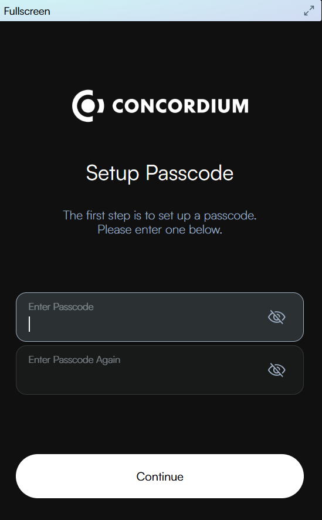

Set up the Concordium Wallet for Web#
The Concordium Wallet for Web is a digital wallet that enables you to create and manage your Concordium identities and accounts and to create transactions, such as sending CCD.
To learn more about identities and accounts, see identities and accounts.
Read the following guide to learn how to set up the wallet.
Note
The Concordium Wallet for Web extension is not supported in any of the web browsers below when used on a mobile phone or tablet.
Get started#
Download the Concordium Wallet for Web extension for your browser.
Chrome
Go to the Chrome Web Store and search for Concordium Wallet.
Click Add to Chrome from the Chrome Web Store.
If prompted, click Add extension.
Click on the puzzle icon. Click Concordium Wallet to start the extension.
Click Get started on the welcome page.
Create a six-digit passcode or use a full password. Click Continue.
Choose whether you are creating a new wallet or recovering an existing one.
Edge
Extensions designed for Google Chrome can also be used in Microsoft Edge. To add an extension to Microsoft Edge from the Chrome Web Store:
In Microsoft Edge, go to the Chrome Web Store.
Select Allow extensions from other stores in the banner at the top of the page, then click Allow to confirm.
Search for Concordium Wallet and select Add to Chrome.
At the prompt showing permissions required by the extension carefully review the permissions, and then click Add extension if you wish to proceed. You’ll see a final prompt confirming the extension has been added.
Click on the Concordium icon to start the extension.
Click Get started on the welcome page.
Create a six-digit passcode or use a full password.
Choose whether you are creating a new wallet or recovering an existing one.
For more information, see the Microsoft support site.
Opera
In Opera, go to the Chrome Web Store and search for Concordium Wallet.
Click Add to Opera.
At the prompt showing permissions required by the extension carefully review the permissions, and then click Add extension if you wish to proceed. You’ll see a final prompt confirming the extension has been added.
Click on the cube icon in your Opera toolbar. Click Concordium Wallet to start the extension.
Click Get started on the welcome page.
Create a six-digit passcode or use a full password.
Choose whether you are creating a new wallet or recovering an existing one.
Brave
Go to the Chrome Web Store and search for Concordium Wallet.
Click Add to Chrome from the Chrome Web Store.
If prompted, click Add extension.
Click on the puzzle icon. Click Concordium Wallet to start the extension.
Click Get started on the welcome page.
Create a six-digit passcode or use a full password.
Choose whether you are creating a new wallet or recovering an existing one.
Recovery phrase setup#
If you are creating a new wallet, you must set up a secret recovery phrase. This is a 24 word phrase that stores your private keys, identities, and accounts. You must write down and confirm your recovery phrase. It is important to keep this secret recovery phrase in a safe location in case you need to recover your wallet on a new device.
Request your identity#
Having set up your passcode, you must then submit a request for an identity.
Select a third-party identity provider from the list. An external web page opens within the app.
Enter the information requested by the third-party identity provider. The information might vary depending on the identity provider. However, they will ask you to provide photos of identification documents and a selfie.
When you have submitted the information to the identity provider, you will have a pending identity in your app. The verification or rejection is usually retrieved from the identity provider within minutes, but check frequently to retrieve the result. The result can be retrieved for up to seven days.
Create an account#
Remove the Concordium Wallet for Web#
Removing your wallet does not remove your data on the Concordium blockchain.
Warning
Before proceeding, if you wish to continue to access your wallet and accounts, make sure you have your secret recovery phrase.
Edge

Opera
Click
 . Click
. Click  to the right of Concordium Wallet.
to the right of Concordium Wallet.Click Remove extension.
Click Remove to confirm removal.
Brave
Click
 . Click
. Click  to the right of Concordium Wallet.
to the right of Concordium Wallet.Click Remove from Brave.
Click Remove to confirm removal.
Note
If you forget your passcode for your installed Concordium Wallet for Web, you will need to remove the extension in your internet browswer and reinstall it, choosing the option to recover your wallet. Use your secret recovery phrase to recover the wallet.

{kind=link}
{kind=link}
{kind=link}
{kind=link}
{kind=link}
{kind=link}
{kind=link}
{kind=link}
{kind=link}
{kind=link}
{kind=link}
{kind=link}